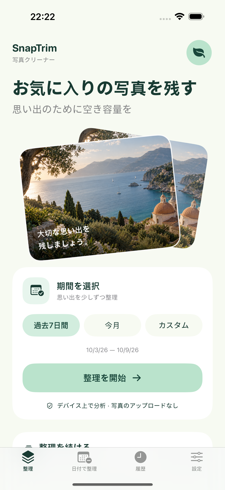
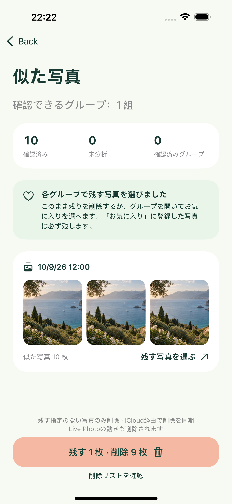
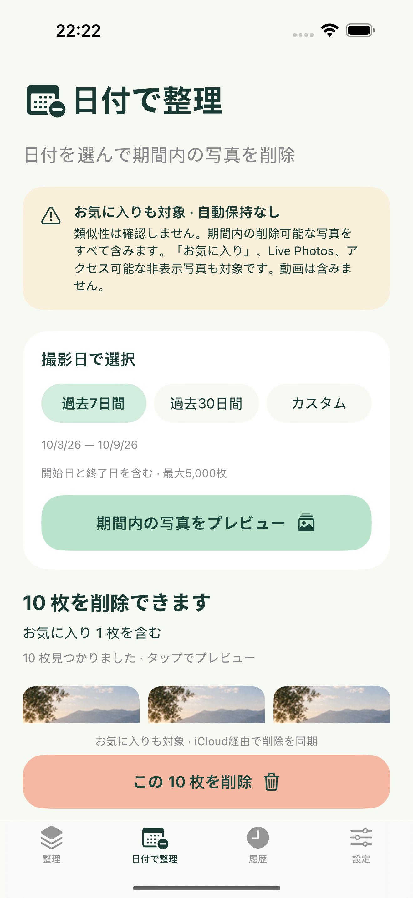
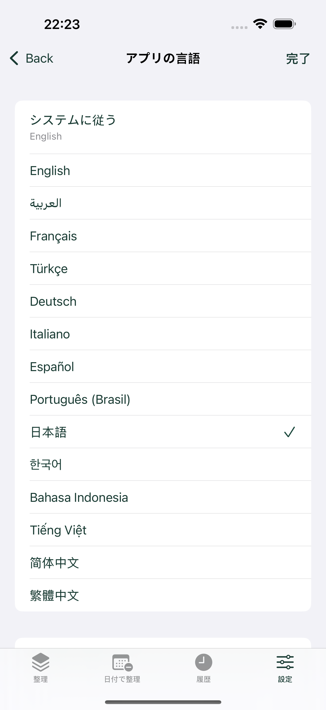

期間を選ぶ
過去7日間、今月、または指定した期間の写真を整理できます。写真の作成日とデバイスのカレンダー・時間帯に基づき、開始日と終了日の両方を含みます。アクセスを制限している場合は、許可した写真のみが対象です。
SNAPTRIM · PHOTO CLEANER
iPhoneの似た写真を見つけ、残す写真を選んで、ほかを削除できます。また、確認後に指定期間の写真を「お気に入り」も含めて削除できます。
思い出のために、少しの空き容量を。iPhone用 · iOS 17以降 · 近日公開 · 無料、広告・アプリ内課金なし

過去7日間、今月、または指定した期間の写真を整理できます。写真の作成日とデバイスのカレンダー・時間帯に基づき、開始日と終了日の両方を含みます。アクセスを制限している場合は、許可した写真のみが対象です。
似た写真とシステムのバースト写真をデバイス上でグループ化します。各グループでは、最初に残す写真が提案されます。追加で残したり、別の写真を選んだりできます。類似写真の整理では「お気に入り」を保護し、各グループに必ず1枚以上を残します。提案は写真の美しさを評価するものではありません。
1つのグループ、または残す指定をしていないすべての写真を整理し、iOSで削除を確認します。キャンセルした場合、写真は変更されません。ローカルの履歴には成功した削除のみが記録されます。
独立した「日付で整理」タブでは、過去7日間、過去30日間、または指定した期間を選べます。写真と枚数をプレビューし、アプリ内とiOSの両方で確認します。対象期間内の削除可能な写真をすべて削除します。「お気に入り」、Live Photos、アプリがアクセスできる非表示の写真も含まれます。写真を自動で残す機能はなく、類似写真の整理の除外リストも使用しません。動画は対象外です。システムが削除できない写真は枚数に計上し、保持します。
日付での整理では、確認済みの選択に新たな写真を追加しません。日付やライブラリが変わった場合、またはアプリを離れた場合は、プレビューが無効になります。削除前に再確認してください。iCloud写真が有効な場合、同じライブラリを使用するほかのデバイスにも削除が同期されます。
破棄可能なサンプル写真を使った実際のアプリ画面です。ユーザー個人のライブラリではありません。
期間を選ぶ

お気に入りの写真を残す

もう不要な写真は、日付で整理。

使いたい言語を選べます
SnapTrimは初期設定でデバイスの対応言語に従い、対応していない場合は英語を使用します。「設定」で14言語から選ぶか、「システムに従う」に戻せます。選択はローカルに保存されます。アプリの表示はすぐに切り替わりますが、iOSのアクセス許可や削除のダイアログは、システム側のアプリ言語設定に従う場合があります。スキャン、読み込み、削除の実行中は言語を変更できません。
1回の操作で最大5,000枚の写真に対応します。類似性の比較対象は10分以内に撮影された画像で、システムのバースト写真はバースト識別子を使用します。短時間に多くの写真を撮影したライブラリでは、期間を狭める必要がある場合があります。認識は補助機能であり、重複写真を見逃す場合があります。Live Photosの認識には静止画を使用し、削除時は項目全体を削除します。クラウドからのダウンロードは初期設定で無効です。有効にするとAppleの写真サービスを使用し、通信量や一時的なストレージを消費する場合があります。バックグラウンドではスキャンが停止し、再開時にはキャッシュした結果を活用します。
写真を復元するには、Appleの「写真」アプリで「最近削除した項目」を開いてください。通常は30日以内に復元できます。SnapTrimが「最近削除した項目」を完全に空にすることはなく、写真のバックアップも保存しません。空き容量はiOSとiCloudが管理しているため、削除しても空き容量がすぐに増えるとは限りません。
iPhoneのモデル、iOSのバージョン、アプリのバージョン、問題が発生するまでの操作手順をメールでお送りください。私的な写真は送らないでください。開発者：Peng Lin。
ヘルプとサポート